执行测试并查看结果
-
在 Check-Mate HD3D 工具的控制组中，点击执行 Check-Mate 测试
 。
。状态行将提供测试过程中的反馈，并且在每个检查器执行检查的过程中列出该检查器名称。测试完成后，将会在状态行中显示错误总数，并且测试结果将会显示在 Check-Mate HD3D 工具中。
您的显示结果可能与这里给出的示意图有所不同，这是由于可以对结果进行不同的过滤，您将在下面的步骤中调整这些设置。
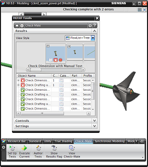
-
在 Check-Mate HD3D 工具中，设置下列显示值。
在此组中
设置这些值
结果
视图样式 = 流列表+树
控件
结果源 = 最近运行
设置
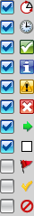
过滤级别 = 测试
-
在结果组的流列表视图中，使用水平滚动条来查看这些图片。
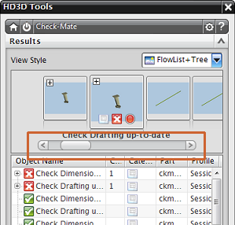
-
在树列表中，找到部件列。
注意到对象名称列中显示的是测试的名称，并且为各个部件列出了您运行的这两个测试。
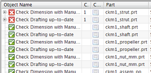
-
在设置组的过滤器级别列表中，选择部件。
注意到对象名称列中现在将显示由部件来组织的测试结果。在图形窗口中，将会显示当前出现在 HD3D 工具结果列表中的节点的 HD3D 标签。您的图形窗口中显示的标签数量可能与给出的示意图有所不同，这是因为 NX 为了避免屏幕显示杂乱，将不显示那些被几何体或重叠标签遮盖的标签。
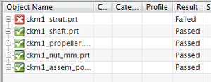 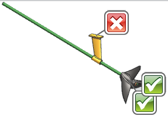
-
在对象名称列中，展开 ckm1_strut.prt 结果节点。
目前状态下，显示在 HD3D 工具结果列表中的部件 ckm1_strut.prt 的最低级别结果为立即子节点( immediate child nodes)，即两个测试。由于测试对象本身并未显示在图形窗口中，因此支架部件的错误标签也不会显示在图形窗口中。
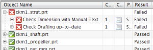

-
在对象名称列的 ckm1_strut.prt 结果节点下方，展开 检查手工输入文本的尺寸标注节点。
-
将您的光标悬浮在部件 ckm1_strut.prt 的三个级别的结果节点上，然后查看弹出的报告。
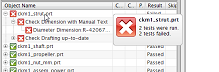
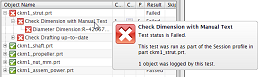
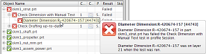
-
双击 Radial Dimension:R–420674... 节点。
NX 将把流列表滚动至该部件的选定结果处，并显示 Check-Mate 结果窗口。
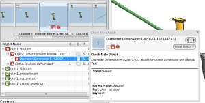
NX 将以上一次关闭该窗口时窗口所处的位置与大小来打开它，Check-Mate 结果窗口为半透明状态，除非光标移动至窗口内。
-
在 Check-Mate 结果窗口中，查看相关信息。
在窗口右上方附近是用于切换细节级别的命令按钮，点击更多细节或更少细节来切换选定结果的细节级别。
NX 已找到一个包含手工输入文本的尺寸，因此测试失败。
-
在 Check-Mate 结果窗口中，点击 并查看显示在结果列表中的下一个节点的测试状态信息，在目前情况下即为对部件 ckm1_strut.prt 的检查最新制图。
-
关闭 Check-Mate 结果窗口。